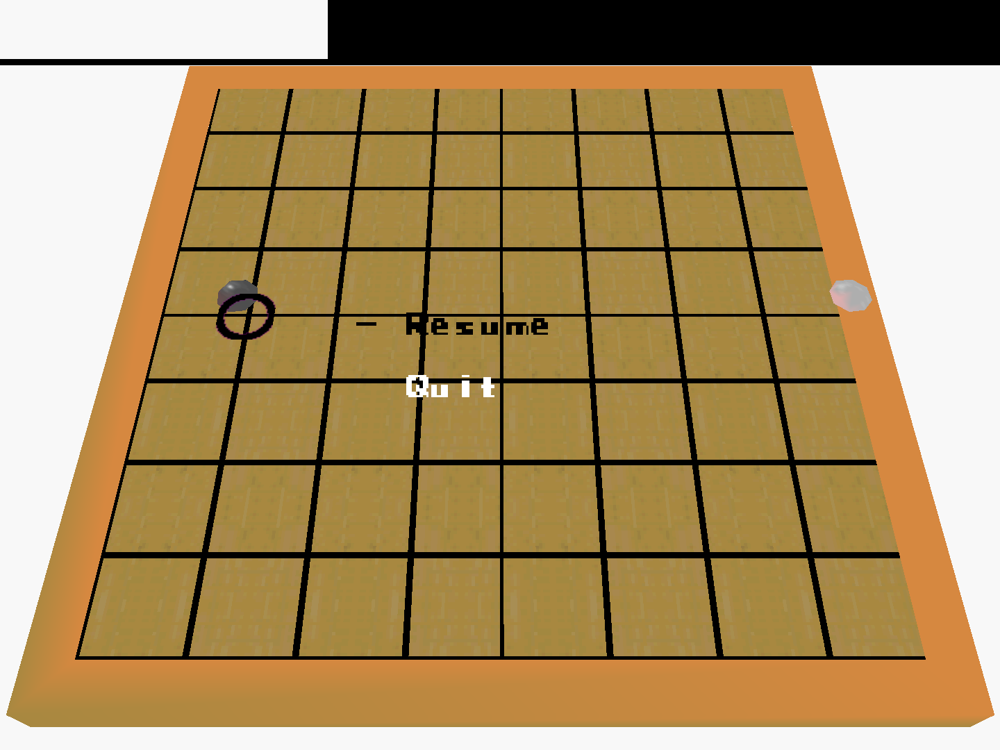
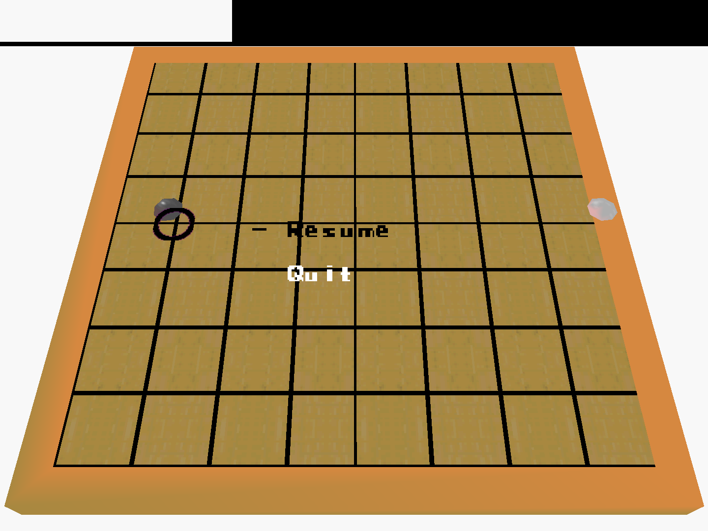

Why would you want to do that?
Ever since I was small I've always loved the Nintendo 64 so what a great idea than try to make a game for it, how hard can it be?
...harder than I thought
In normal software development there is a vast array of forum posts, support documents and development tools that make it a breeze to learn. In this scenario if you come across a problem, simply googling it more often than not will not provide you with the solution.
How did it go?
After a lot of reading through documentation written in about 1996 and games other people have made, I managed to create a fairly functional digital recreation of the Go Board game. It features a title screen, score count, multiplayer support, sound effects, a pause menu with the options to resume or quit and basic territory calculation.
Video Demonstration
Screenshots
 
